В обілковому запису оберіть в розділ "Календар"
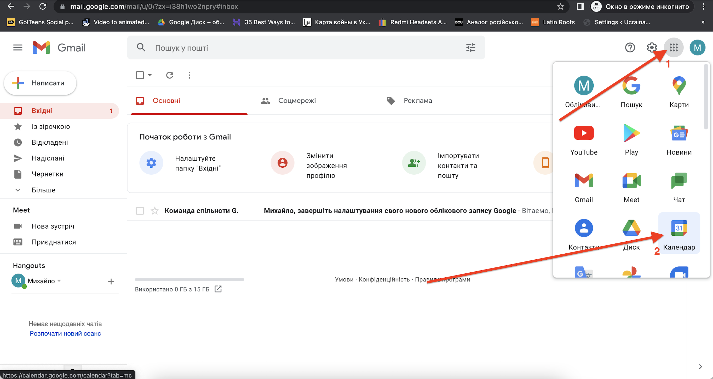
У полі із датами (поточний тиждень) натисніть на бажаний час бажаної дати (1) - в прикладі це 15:30 в неділю. У вікні, що відкриється введіть назву події (2) - в прикладі "Пробний дзвінок". Якщо необхідно,
скорегуйте час проведення заходу (3) - в прикладі та за замовчуванням тривалість заходу - 1 година. Додайте учасників, вказавши їх електронні поштові адреси, що є акаутнами Google (4). По завершенню всії необхідних
дій, натисніть кнопку "Зберегти" (5)
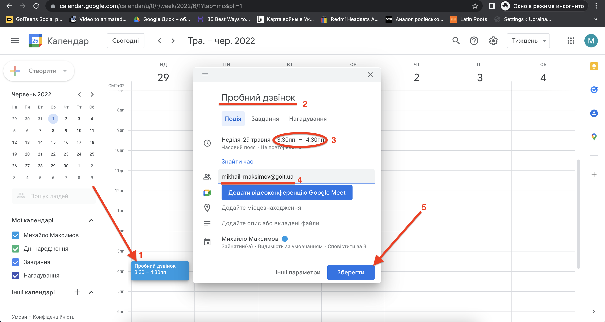
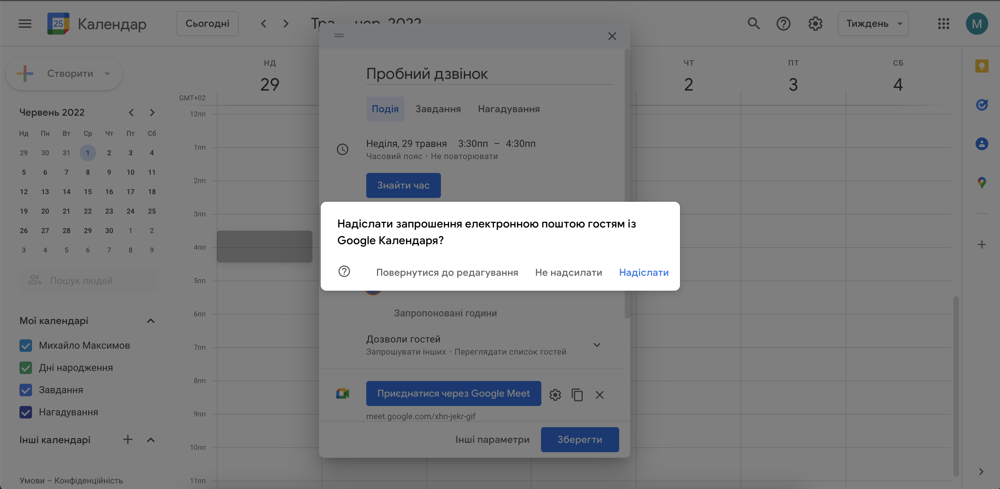
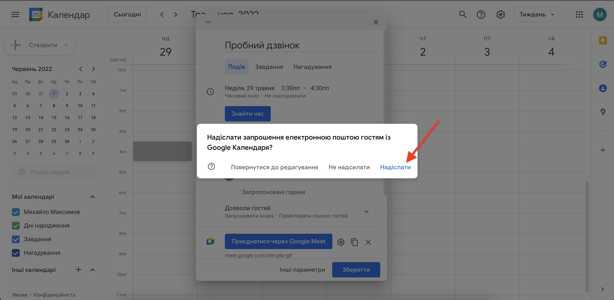
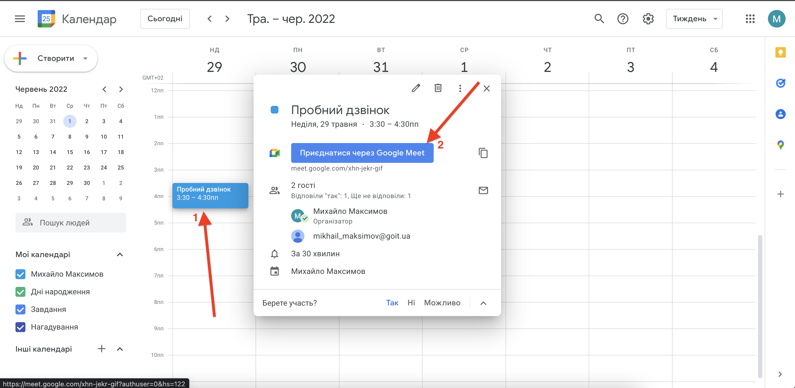
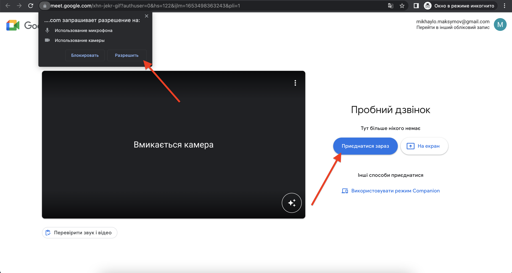
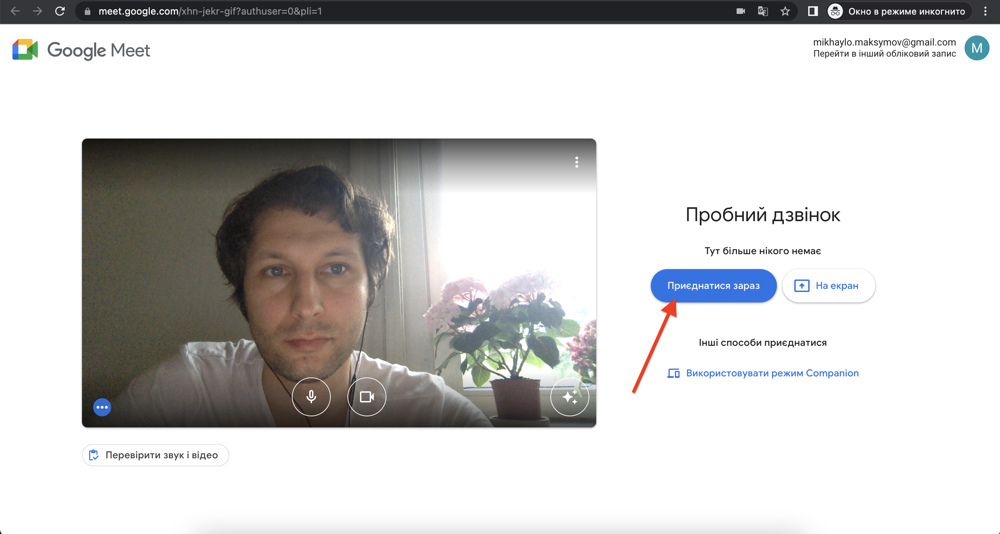
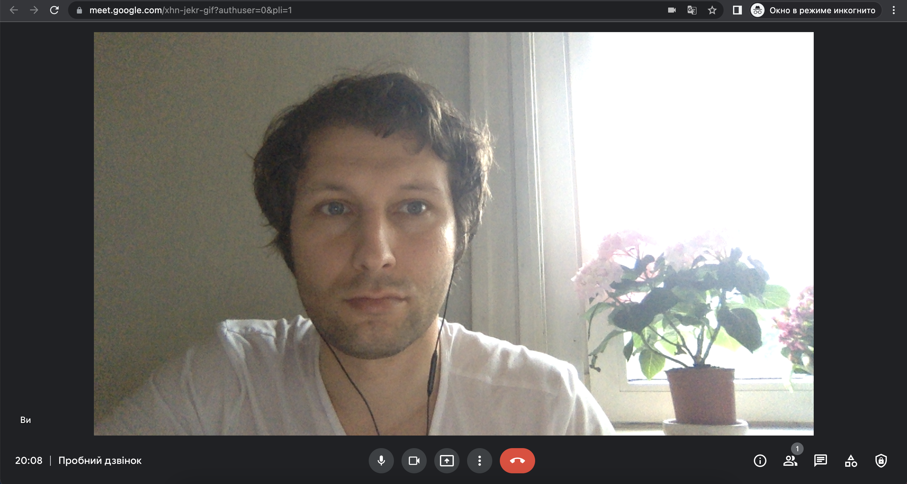
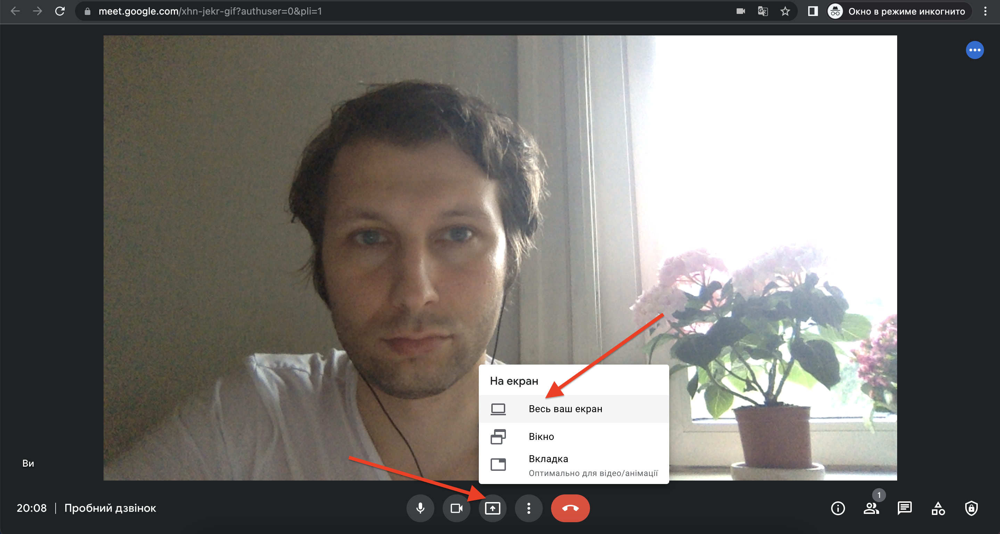
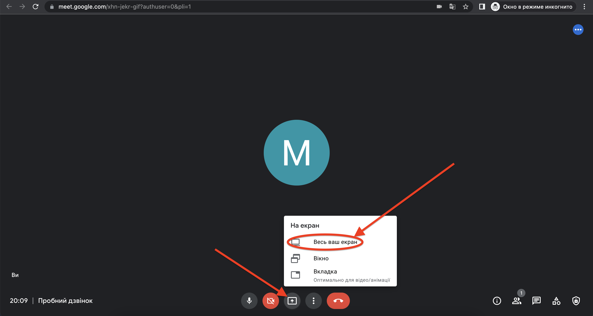
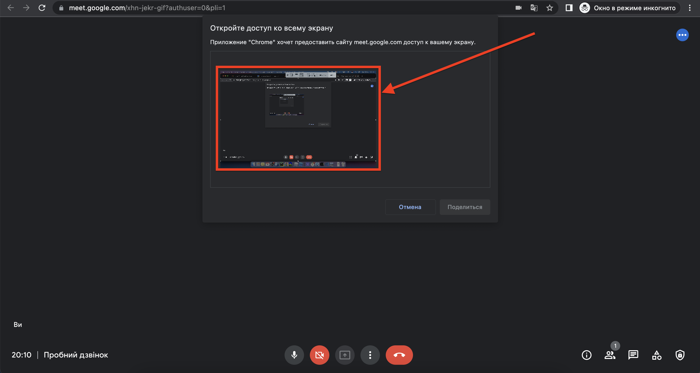
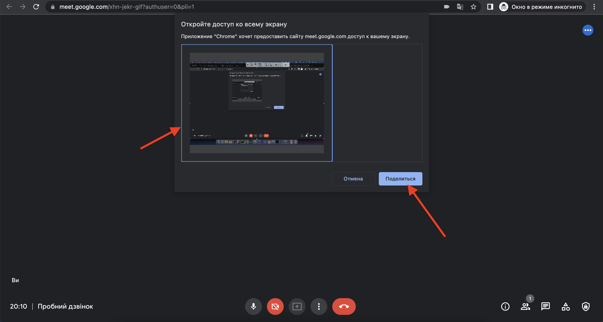
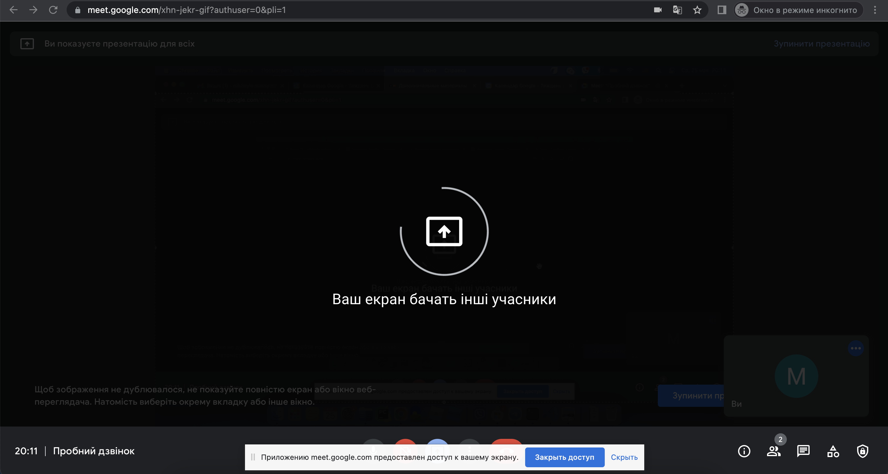